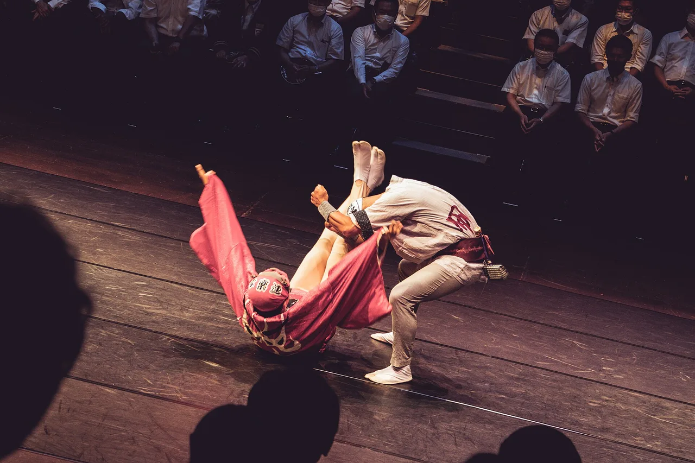

Tokushima 旅遊指南（為日語學習者撰寫）
重點
德島位於四國東側，以400年歷史的阿波舞夏季舞蹈節而聞名，以及面向淡路島的Naruto漩渦的強大漩渦。其山區內部隱藏著遠隔的Iya谷地和其驚險的藤編懸浮橋。
📍 必看: Awa Odori (and year-round Awa Odori Kaikan hall) · 🥢 必嚐: Tokushima Ramen · 來源
咆哮的漩渦與充滿活力的阿波舞。

🍜 美食 ▰▰▰▰▱ 🏯 文化 ▰▱▱▱▱ 🏙 城市 ▰▰▱▱▱ 🚄 交通 ▰▱▱▱▱ 🌿 自然 ▰▰▰▱▱
🥢 必嚐: Tokushima Ramen · 📍 必看: Awa Odori (and year-round Awa Odori Kaikan hall)
🗣 川の音が聞こえます。 Kawa no oto ga kikoemasu.
德島以鳴門海峽的潮汐漩渦和阿波舞聞名，後者是日本最熱情洋溢的夏季舞蹈節慶。偏遠的祖谷溪谷擁有藤蔓橋。
必看景點
★ Awa Odori (and year-round Awa Odori Kaikan hall)★ Naruto Whirlpools & Uzu-no-Michi walkway★ Iya Valley & Kazurabashi vine bridge💎 Nagoro Scarecrow Village (Kakashi no Sato)💎 Indigo (Awa-ai) dyeing at Ai-no-Yakata, Aizumi
- Naruto 漩渦
- Awa Odori（八月舞蹈節慶）
- Iya Valley 藤蔓橋
- Mount Tsurugi
必吃美食
★ Tokushima Ramen★ Sudachi★ Naruto Kintoki sweet potato / Naruto sea bream💎 Dekomawashi💎 Iya Soba
酸橙柑橘和德島拉麵。
如何前往與最佳季節
如何前往: 德島可從大阪／神戶經由明石海峽大橋搭乘巴士到達（約2小時30分鐘）。
最佳季節: 8月12日至15日舉辦阿波舞；大潮期間漩渦最壯觀。
學個日語
おすすめは何ですか？
Osusume wa nan desu ka? — "德島在八月中旬舉辦的大型舞蹈節慶"
在地詞彙
阿波踊り
Awa Odori — 德島在八月中旬舉辦的大型舞蹈節慶
💡 小提醒
漩渦在春季大潮和秋季大潮時最強勁——請查看時間表。
資料來源: Japan National Tourism Organization (JNTO).
事實依官方旅遊資訊查核，觀點為我們所有。